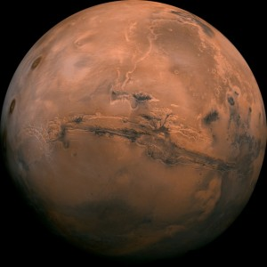
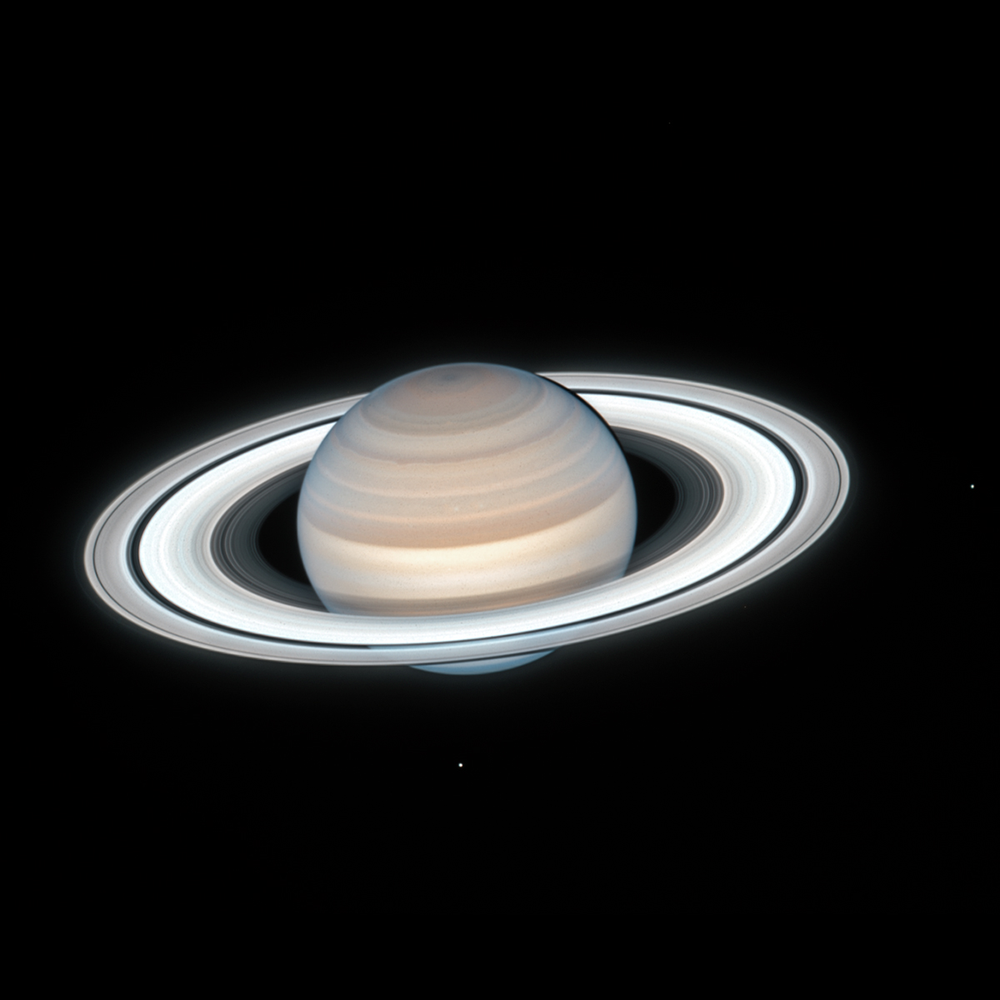
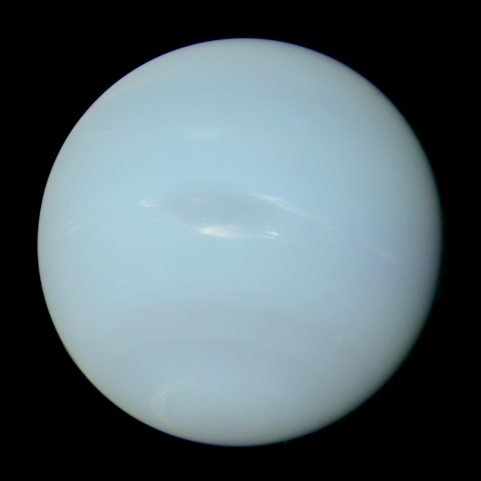

Solar System Planets In Order
Mercury

Mercury is the smallest planet in the solar
system, and it is also the planet closest to
the Sun, making it the most difficult of the
planets to see with the unaided eye. Because
its rising or setting is always within about
two hours of the Sun's, Mercury is never
observable when the sky is fully dark.
Venus

Venus is the second planet from the Sun.
It is a terrestrial planet and is the
closest in mass and size to its orbital
neighbour Earth. Venus is notable for
having the densest atmosphere of the
terrestrial planets, composed mostly
of carbon dioxide with a thick, global
sulfuric acid cloud cover. At the
surface it has a mean temperature of
737 K (464 °C; 867 °F) and a pressure
of 92 times that of Earth's at sea level.
These extreme conditions compress carbon
dioxide into a supercritical state close
to Venus's surface.
Earth

Earth is the third planet from the
Sun and the only astronomical object
known to harbor life. This is enabled
by Earth being an ocean world, the only
one in the Solar System sustaining liquid
surface water. Almost all of Earth's water
is contained in its global ocean, covering
70.8% of Earth's crust.
Mars

Mars is no place for the faint-hearted.
It’s dry, rocky, and bitter cold.
The fourth planet from the Sun, Mars,
is one of Earth's two closest planetary
neighbors (Venus is the other). Mars is
one of the easiest planets to spot in the
night sky – it looks like a bright red point
of light.
Jupiter

Jupiter is the fifth planet from the Sun
and the largest in the Solar System. A gas
giant, Jupiter's mass is more than two and
a half times that of all the other planets
in the Solar System combined and slightly
less than one one-thousandth the mass of the
Sun. Jupiter orbits the Sun at a distance of
5.20 AU (778.5 Gm) with an orbital period of
11.86 years.
Saturn

Saturn is the sixth planet from the
Sun and the second-largest in the Solar
System, after Jupiter. It is a gas giant
with an average radius of about nine-and-a-half
times that of Earth. It has only one-eighth the
average density of Earth, but is over 95 times
more massive.
Uranus

Uranus is one of two ice giants in the outer
solar system (the other is Neptune). Most (80% or
more) of the planet's mass is made up of a hot dense
fluid of "icy" materials – water, methane, and ammonia –
above a small rocky core. Near the core, it heats up to
9,000 degrees Fahrenheit (4,982 degrees Celsius).
Neptune

Neptune is the eighth and farthest known
planet from the Sun. It is the fourth-largest
planet in the Solar System by diameter,
the third-most-massive planet, and the densest giant planet.
It is 17 times the mass of Earth and slightly more massive
than fellow ice giant Uranus.